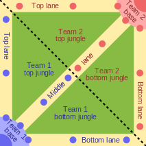

DOTA 2 is a PC video game, made by Valve, the defined the gaming genre called MOBA (Multi-player Online Battle Arena). This genre contains some of the most popular video games currently on the market, including League of Legends and Blizzard's (creators of World of Warcraft) Heroes of the Storm.
It consists of 10 players, split in to 2 teams of 5, competing by controlling unique heroes on a closed map. The objective is to be the first team to destroy the enemy team's base while defending your own.
Each base is arranged in opposite corners with 3 lanes radiating out and connecting with the lane radiating from the other teams base. The lanes are protected by towers, and every 30 seconds a group of creeps that fight for your team are spawn and begin traveling down each lane.
